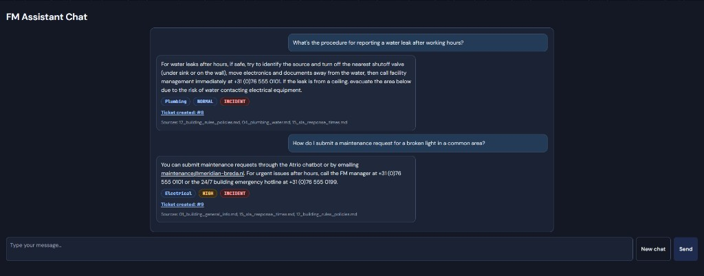
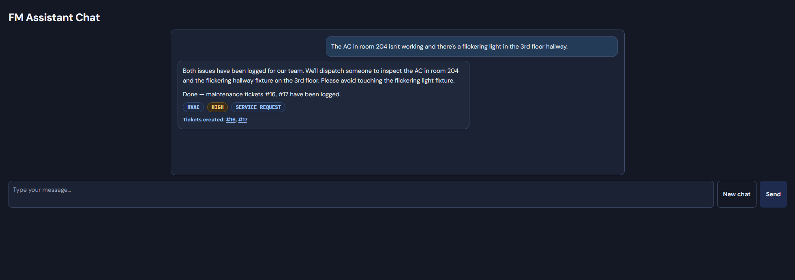
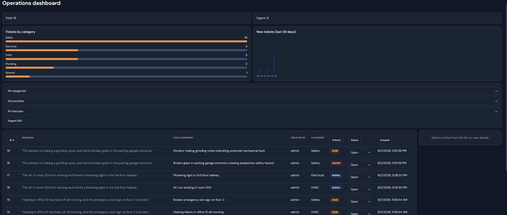
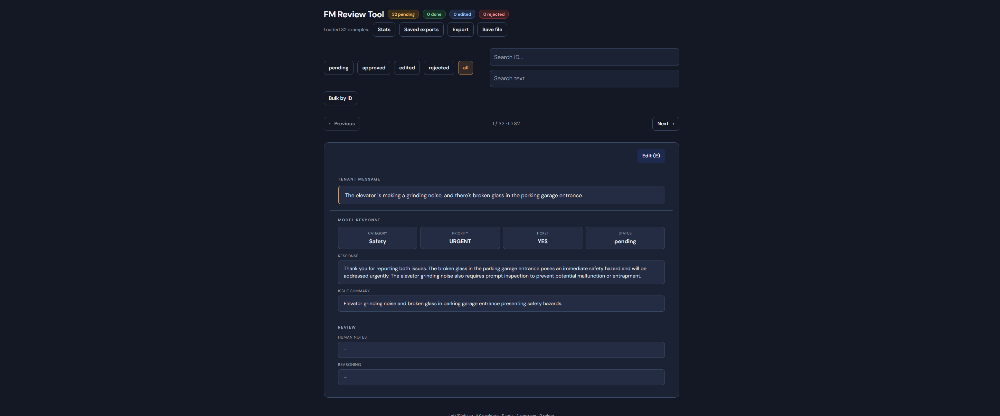

Atrio to asystent AI dla zespołów facility management. Projekt realizowany samodzielnie, około dwóch miesięcy w niepełnym wymiarze. Notatki o tym, czego RAG naprawdę wymaga, gdy wychodzi się poza wersję demonstracyjną.
Zespoły FM działają pomiędzy dwoma źródłami tarcia. Z jednej strony najemca, który chce naprawy i nie ma ani cierpliwości, ani znajomości terminologii z dokumentacji budynku. Z drugiej operator helpdesku, który musi przełożyć „winda na drugim piętrze hałasuje” na właściwą kategorię, priorytet, dane wykonawcy i ticket. Pomiędzy nimi leży dwustustronicowa dokumentacja, segregator procedur i czyjaś nieformalna wiedza o tym, który wykonawca obsługuje który kontrakt.
Atrio to moja propozycja tego, jak powinna wyglądać ta pośrednia warstwa. Czat dla najemcy lub helpdesku, model językowy osadzony w dokumentacji budynku oraz backend, który zamienia rozmowę w ustrukturyzowany ticket — automatycznie, z właściwą kategorią i priorytetem oraz odwołaniami do stron, na których oparto decyzję.
Tworzę go samodzielnie, jako projekt portfolio i open-source. Chatbot działa. Wyszukiwanie działa. Najciekawszy problem — i powód powstania tego studium przypadku — leży właśnie pomiędzy nimi.
Warstwa dostępna dla użytkownika to interfejs czatu. Pytanie trafia do systemu, odpowiedź pojawia się strumieniowo wraz ze źródłami, a jeśli w rozmowie pojawił się problem do zgłoszenia — jeden lub więcej ticketów trafia na dashboard. To około dwóch trzecich repozytorium. Reszta to panel administracyjny: dokumenty, luki w wiedzy, ewaluacja RAG, przegląd danych treningowych, kontrola jakości promptów i profile modeli. Najciekawsza praca jest właśnie po tej stronie.
Wersja na żywo: atrio-fm.com ↗, z kontem testowym operatora (login: operator, hasło: operator).
used_sources)
W każdym projekcie RAG pierwsza uwaga kieruje się na warstwę wyszukiwania: baza wektorowa, embeddingi, zapytania, fragmenty dokumentów, model językowy. Zanim napisałem pierwszą linię kodu, przeczytałem kilkanaście artykułów naukowych i dwa razy tyle wpisów na blogach. Stos technologiczny złożył się szybko. Chroma lokalnie, w trybie trwałym, dokumenty FM z zestawu startowego (demonstracyjny „Meridian Business Center”). Zapytanie, top-k, fragmenty w prompcie, odpowiedź wraz ze źródłami.
Działający chatbot powstał w pierwsze dwa tygodnie. Mylący kamień milowy.
Nie doceniłem, ile jakości leży poza samym wyszukiwaniem. Strategia dzielenia dokumentu na fragmenty — gdzie go ciąć — bywa ważniejsza niż zmiana modelu embeddingów. Ponowne rankowanie wyników przed promptem daje więcej niż strojenie parametru top-k. Gdy wyszukiwanie działa jak należy, rozmowa nie dotyczy już wyszukiwania, lecz tego, co model zrobi z fragmentami. O tym jest kolejna sekcja.
Wiadomość od najemcy: „W sali spotkań nr 3 jest zimno, a drukarka przy recepcji znów się zacięła. Możecie to sprawdzić?” Dwa niezwiązane ze sobą problemy, różne kategorie i priorytety w jednym zdaniu. Czasem jest to samo pytanie („jakie jest hasło do WiFi dla gości?”). Czasem incydent ukryty w pytaniu („czy mamy procedurę na alarm drzwiowy w nocy? Bo właśnie się włączył”). A czasem atak — prompt injection podszywający się pod skargę.
Każdy z tych przypadków wymaga innej reakcji:
Podejście hybrydowe z założenia. Model zwraca ustrukturyzowany JSON — intencję, listę problemów, sugerowane kategorie i priorytety. Backend przepuszcza to przez zabezpieczenia i reguły przed zapisem: deduplikację względem otwartych ticketów, limity priorytetów, nadpisania kategorii, wykrywanie wzorców prompt injection. Model proponuje, backend decyduje. Function calling byłby w teorii czystszy, ale zależało mi na warstwie reguł, która jest czytelna, wersjonowana i edytowalna bez ponownego wdrażania integracji z modelem.
To tutaj spędzam większość czasu w kolejnych iteracjach. Jakość wyszukiwania zmienia się powoli — wystarczy mierzyć ją raz w tygodniu. Jakość decyzji zmienia się w chwili dodania nowej kategorii, budynku czy przypadku brzegowego.


Jeśli wyszukiwanie to ta łatwa jedna trzecia, a czat — widoczna jedna trzecia, to warstwa decyzji jest tą częścią, która naprawdę się liczy, a o którą nikt nie pyta podczas demonstracji. To kod pomiędzy propozycją modelu a tym, co system faktycznie zapisuje: deduplikacja, limity priorytetów, nadpisania kategorii, ścieżka odmowy przy prompt injection. Model przekazuje ustrukturyzowaną propozycję; ta warstwa rozstrzyga, co z niej wynika. Reguły są w kodzie, nie w prompcie — mogę je czytać, testować i zmieniać pojedynczo, bez renegocjowania integracji z modelem.
Tej warstwy trzeba bronić, a nie tylko ją zbudować. Model, który myli się z dużą pewnością raz na pięćdziesiąt wiadomości, jest niewidoczny w demonstracji i groźny w skali. Dlatego praca polega głównie na odejmowaniu: na określaniu, czego model nie może zrobić samodzielnie. Utworzyć duplikat już śledzonego problemu. Podnieść rutynową kategorię do najwyższego priorytetu. Wykonać polecenie z prompt injection podszytego pod skargę. Każdy z tych przypadków to reguła, a nie pobożne życzenie.
Zestaw testów ewaluacyjnych utrzymuje tę warstwę w ryzach. To plik ręcznie dobranych przypadków oraz mechanizm oceniający system. Dwie liczby: czy system w ogóle odpowiedział i czy odpowiedział poprawnie, po odjęciu błędów transmisji. Pierwsza mówi, czy system stoi. Druga — czy ma rację. Trudna rozmowa → przegląd → nowy przypadek testowy → korekta reguły lub promptu → ponowny przebieg. Wzrost poprawności wyznacza nowy punkt odniesienia. Brak wzrostu oznacza wycofanie zmiany. Ewaluacja nie jest produktem — chroni przed oszukiwaniem samego siebie co do jakości warstwy decyzji.

Najbliższe dwa tygodnie to jakość, a nie nowe funkcje. Lepsze ponowne rankowanie wyników przed modelem. Bardziej restrykcyjne reguły dla kategorii, które najczęściej są mylone. Pełniejszy proces przeglądu w panelu administracyjnym — korekta błędnej decyzji w kilka minut zamiast kolejnego wdrożenia. Konkretnie: mierzalny wzrost poprawności na zbiorze ewaluacyjnym, zanim dodam cokolwiek nowego.
Infrastruktura klasy enterprise. Bez SSO, architektury wielodostępowej i certyfikacji SOC 2. To problemy produktu z płacącymi użytkownikami; Atrio ich nie ma i nie zamierzam tego udawać.
Rozbudowana analityka. Dashboard operacyjny w stylu Power BI buduje się wtedy, gdy decyzje są już wiarygodne. Moje jeszcze nie są.
Dopracowanie UX. Interfejs wygląda jak środowisko programisty. Estetyka może poczekać — teraz byłaby ucieczką od trudniejszej pracy.
Stawiam na niezawodność decyzji jako jedyną rzecz wartą optymalizacji na tym etapie. Reszta to rozproszenie uwagi udające postęp.
Praca nad tym projektem zmieniła mój sposób myślenia o systemach RAG. Artykuły pięknie opisują warstwę wyszukiwania i na tym kończą. Prawdziwa praca zaczyna się po stronie fragmentów: jak dzieli się dokumenty, co umieszcza przed kontekstem i po nim, co robi się z odpowiedzią modelu, zanim dotknie reszty systemu, oraz jak sprawdza się, czy wczorajsza zmiana nie zepsuła dzisiejszego działania.
Drugie zaskoczenie: jak wiele pracy ma charakter obronny. Model, który myli się z dużą pewnością raz na pięćdziesiąt przypadków, nie jest problemem na demonstracji, a staje się poważny w skali. Duża część projektu poszła w zabezpieczenia — przed prompt injection, na deduplikację, limity priorytetów, nadpisania i warstwę odmowy. Mało efektowne, a właśnie to oddziela prototyp od systemu pracującego na prawdziwej kolejce ticketów.
Podsumowanie w jednym zdaniu: uruchomienie modelu językowego przestało być trudne. Kontrolowanie jego zachowania na nieuporządkowanych danych z prawdziwego świata — to cała praca.